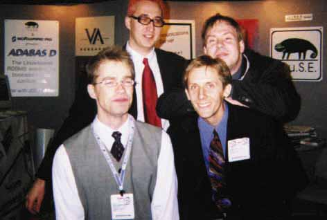
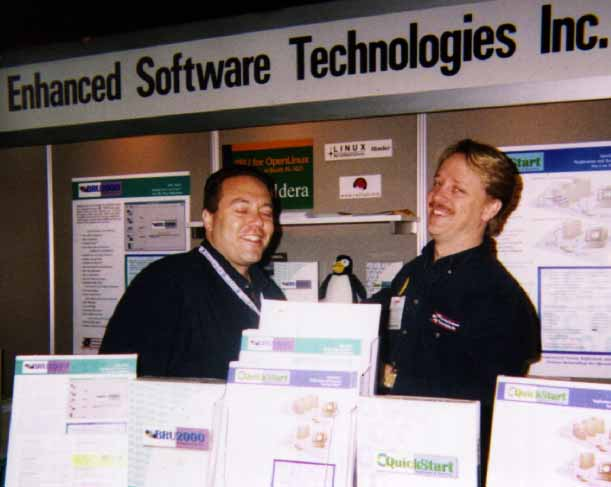
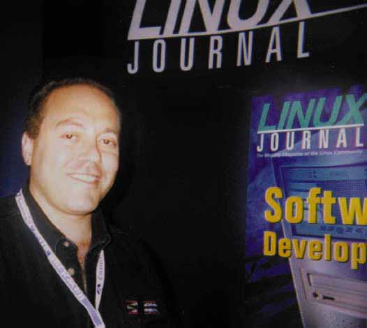
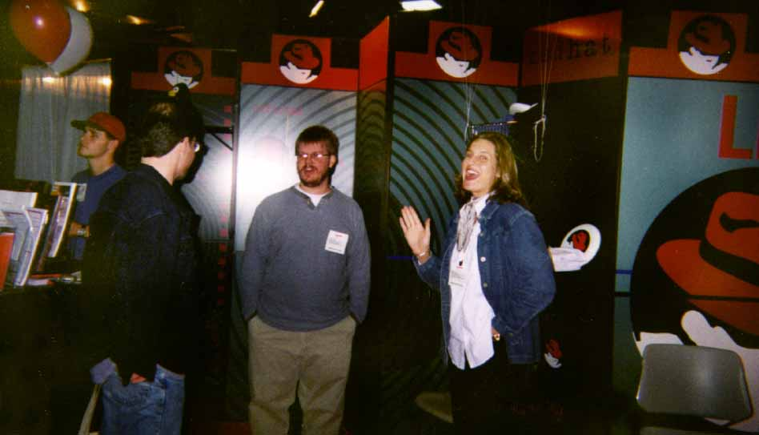
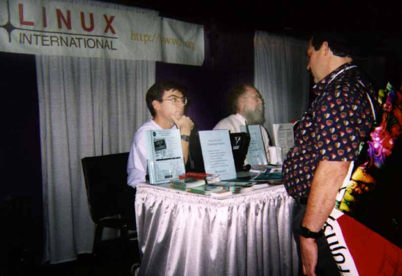
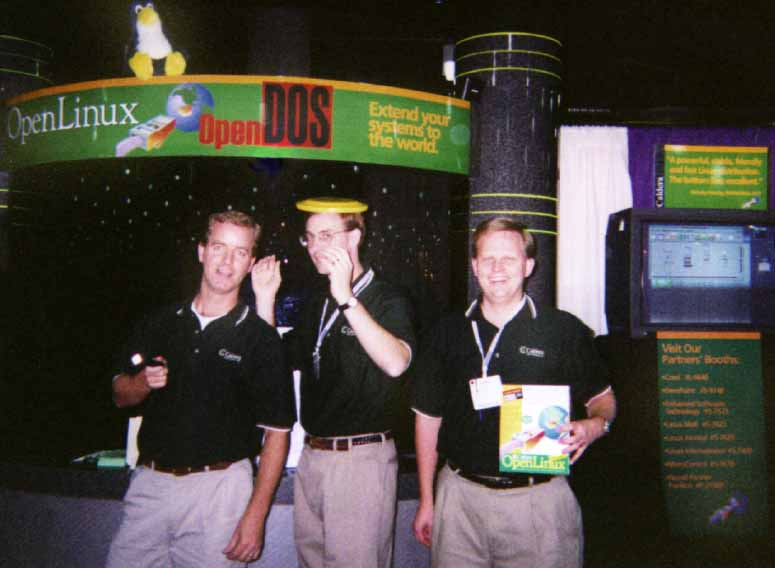
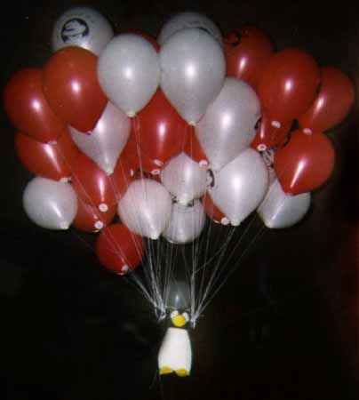
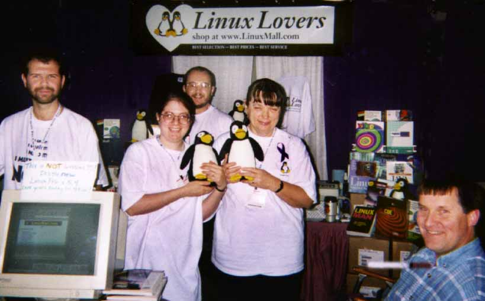

COMDEX/Fall '97 Photo Album

S.u.S.E., Bodo, Rolf, Michael and James

Enhanced Software Technologies, Ted Cook and Tim Jones

Ted Cook in front of Linux Journal booth

Red Hat Software, Mark Ewing and Anna Selvia

Linux International, Marc Merlin and Jon "maddog" Hall

InfoMagic, Clay Claiborne of Cosmos Engineering and his daughter, Candice

Caldera, Lyle Ball and friends

"When penguins fly ..."

Work Group Solutions, Aldo, Bonnie, Mark, and Pat